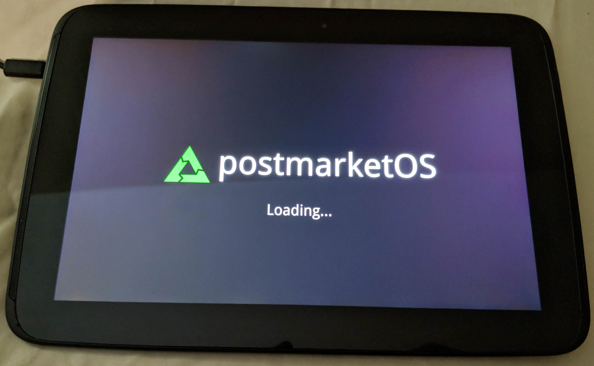

Google Nexus 10 (google-manta)
|
 Google Nexus 10 | |
| Manufacturer | Google (Samsung) |
|---|---|
| Name | Nexus 10 |
| Codename | google-manta |
| Model | GT-P8110 |
| Released | 2012 |
| Type | tablet |
| Hardware | |
| Chipset | Samsung Exynos 5250 |
| CPU | 1.7 GHz Dual-core Cortex-A15 |
| GPU | Mali T604 |
| Display | 2560x1600 IPS |
| Storage | 16/32 GB |
| Memory | 2 GB |
| Architecture | armv7 |
| Software | |
Original software
The software and version the device was shipped with.
|
Android 4.2.2 (Linux 3.0) |
Extended version
The most recent supported version from the manufacturer.
|
Android |
| postmarketOS | |
| Category | community |
Mainline
Instead of a Linux kernel fork, it is possible to run (Close to) Mainline.
|
yes |
pmOS kernel
The kernel version that runs on the device's port.
|
Mainline |
Unixbench score
Unixbench Whetstone/Dhrystone score. See Unixbench.
|
956.9 |
| Device package |
device-google-manta out-of-tree
|
| Kernel package | linux-postmarketos-exynos5 |
{kind=link}
Flashing
Whether it is possible to flash the device with
pmbootstrap flasher. |
Works
|
|---|---|
USB Networking
After connecting the device with USB to your PC, you can connect to it via telnet (initramfs) or SSH (booted system).
|
Works
|
Internal storage
eMMC, SD cards, UFS...
|
Works
|
Battery
Whether charging and battery level reporting work.
|
Works
|
Screen
Whether the display works; ideally with sleep mode and brightness control.
|
Works
|
Touchscreen |
Works
|
| Multimedia | |
3D Acceleration |
Works
|
Audio
Audio playback, microphone, headset and buttons.
|
Partial
|
Camera |
Broken
|
Camera Flash |
Works
|
| Connectivity | |
WiFi |
Works
|
Bluetooth |
Works
|
GPS |
Broken
|
NFC
Near Field Communication
|
Broken
|
| Miscellaneous | |
FDE
Full disk encryption and unlocking with unl0kr.
|
Works
|
USB OTG
USB On-The-Go or USB-C Role switching.
|
Works
|
HDMI/DP
Video and audio output with HDMI or DisplayPort.
|
Works
|
| Sensors | |
Accelerometer
Handles automatic screen rotation in many interfaces.
|
Works
|
Magnetometer
Sensor to measure the Earth's magnetism
|
Works
|
Ambient Light
Measures the light level; used for automatic screen dimming in many interfaces.
|
Broken
|
Haptics |
Works
|
Barometer
Sensor to measure air pressure
|
Works
|
Secondary Bootloader
Whether it is possible to chainload U-Boot from stock bootloader.
|
Works
|
|---|---|
Mainline
Whether latest upstream versions of U-Boot are not broken and it is possible to use them.
|
Works
|
Internal Storage
Whether it is possible to boot from internal storage (e.g. eMMC or UFS).
|
Works
|
USB Host
Whether it is possible to boot from a USB storage or connect a keyboard.
|
Broken
|
USB Peripheral
Whether it is possible to use device as a peripheral in U-Boot, e.g. for fastboot mode.
|
Broken
|
Display |
Broken
|
Buttons
Whether it is possible to navigate in boot menu or grub with volume and power buttons.
|
Broken
|
Users owning this device
- Romigus (Notes: 2/16; pmOS Phosh)
The Google Nexus 10 is an old tablet with a very outdated android version making it nearly unusable for any kind of task. Multiple people worked on mainline linux support since at least 2023. The device runs postmarketOS quite well.
However it's age means less performance compared to other devices. Therefore choosing a lightweight desktop environment like phosh is adviseable.
How to enter flash mode
fastboot
- Connect a USB cable
- Power the device off
- Hold power + volume up + volume down
- You should get a bootloader screen0
heimdall
- Connect a USB cable
- Power the device off
- Hold power + volume down
- You should get a bootloader screen saying "Downloading... Do not turn off target !!"
Installation
U-Boot
U-Boot currently does not automatically boot from any partition other than userdata! |
| Currently, U-Boot requires up to 10 seconds to boot an EFI file. During that time, the screen remains black. Please be patient when booting up the device! |
The device requires U-Boot to gain UEFI support and boot newer versions of postmarketOS. Ready to use binaries can be found here. The source code is also available. The U-Boot port is still in early development and therefore has a limited feature set.
- Download an image from https://gitlab.com/LaT3St/u-boot-binaries/-/tree/main/master
- Uncompress, e.g.:
xz -d u-boot-master-samsung-manta.img.xz
- Then flash with fastboot:
fastboot flash boot u-boot-master-samsung-manta.img
postmarketOS
| The tablet sometimes needs a lot of time to extract larger package sizes. Be patient when flashing large images. |
See Installation guide. Flashing can be done using Fastboot (preferred) or Heimdall.
From a prebuilt image
- Download an image from https://images.postmarketos.org/bpo/edge/samsung-manta/
- Uncompress, e.g.:
xz -d 20240222-1756-postmarketOS-edge-phosh-22.3-samsung-manta.img.xz
- Then flash with fastboot:
fastboot flash userdata -S 512M 20240222-1756-postmarketOS-edge-phosh-22.3-samsung-manta.img
- Reboot
From pmbootstrap
fastboot
pmbootstrap currently does not support setting the fastboot package size, so pmbootstrap flasher flash_rootfs will not work. Since the rootfs partition is bigger than 1 GiB, it has to be exported and flashed manually:
pmbootstrap export cd /tmp/postmarketOS-export fastboot flash -S 512M userdata samsung-manta.img
heimdall
pmbootstrap flasher --method heimdall-bootimg flash_rootfs --partition userdata
Info
Naming
As of November 2025 the device name samsung-manta might be obsolete soon, as this initial linux kernel patch changes the vendor to Google in order to better fit naming conventions.
Booting
The stock bootloader is called S-Boot and it's shell can be accessed via UART. As the device originally shipped as an Android tablet, it lacks essential features. Therefore a U-Boot port was developed and is used as a secondary bootloader to provide important functionality like UEFI. Using this bootloader to it's fullest potential also requires UART at the moment, as U-Boot still lacks support for the display. U-Boot needs to be flashed to the boot partition of the device in order to work.
UART
Nexus Debug Cable
For development and testing purposes, a serial debug cable can be built comparatively easy. The tablet uses a TRRS connector as a headphone jack with mic capabilities. Providing -3.3V to the mic input selects a special serial mode with 1.8V logic levels at a baudrate of 115200. More information on Nexus debug cables can be found at Serial debugging/Cable schematics#Nexus_debug_cable.
Aquiring serial connection through the headphone jack is non intrusive and poses minimal risk to the device and is therefore recommended.
Mainboard UART
UART can also be found at a 12 pin connector close to edge of mainboard. The same connector is used for many Samsung devices, but it's pinout varies, see Serial_debugging#Main_board_UART_on_exynos_devices. Pad number 1 where the tiny triangle is pointing, and TX (from manta's perspective) is then pad 10, and RX pad 12. The device uses 1.8 V signal strength here.
{kind=link}
{kind=link}
GPU Acceleration
The Google Nexus 10 has a Mali T604 GPU which originally shipped with quite old binary drivers. These don't work in postmarketOS and cannot be maintained anyway. Mesa provides the panfrost driver, which is an open source reimplementation.
The open source driver is lacking support for newer OpenGL versions, therefore forcing some applications into software rendering. This cripples performance in tasks like web browsing. Using Chromium instead of Firefox might help. Also the driver has some issues in particular with the framebuffer. Expect some flickering.
Battery
The device has aged considerably. Batteries in these devices have a good chance of being nearly unusable or completely dead. To make matters worse, buying replacements from well-known vendors seems impossible. There are some cheap no-name brands available on import vendors.
Display
The display works quite nicely. Currently, some error messages might pop up in the kernel log files when turning the display on and off with the power button. There are no functional problems known.
Haptics
| Haptics are a recent addition to the kernel and postmarketOS. Please make sure that you are using feedbackd (v0.8.7-r3 or newer) or add the necessary udev rule described in Haptics. |
The isa1200 driver seems to have some issues in regards to the haptics strength which does limit the ability to customize haptics a bit. The haptic feedback is working flawlessly otherwise.
Rear panel
The Nexus 10 shipped with a soft touch coating on the rear. The material is prone to degradation and will get sticky.
Audio
Audio support is quite new in the kernel and not perfect. The kernel message buffer might be spammed by FIFO-errors regarding the wm1811 audio codec. This is a known issue. Also there is crackling when locking and unlocking the device.
If there is seemingly no sound, setting the output device to internal speakers and increasing the volume should resolve the issue.
Charging
Charging the device seems to work well. Phosh sometimes shows no charging icon as if the tablet got unplugged. This happens when the device uses more current than is available via the micro-USB port.
Sleep
Currently, there are issues with the kernel going to sleep and not waking up anymore. This can partially be mitigated by disabling sleep altogether. Turning the tablet off or leaving it plugged in is advisable when not in use, especially when the device has a weak battery. Sometimes the kernel seems to go to sleep regardless of energy options. This happens with flip covers too. A hard reset might be needed to reboot. To peform a hard reset, hold down the power button for a longer amount of time. The device should vibrate, indicating a successful boot.
Dock Connector
The Nexus 10 had a dock available. It got connected by magnets and pogo-pins and might offered faster charging and probably USB capabilities. There are some 3D printable versions available for use with an adapter cable. Sadly, no such cables can be bought anymore rendering the dock connector unusable.
HDMI Out
The device provides HDMI output on the opposite edge to it's micro-USB connector. A micro-HDMI adapter is necessary.
Links
-
device-google-mantaout-of-tree - linux-postmarketos-exynos5